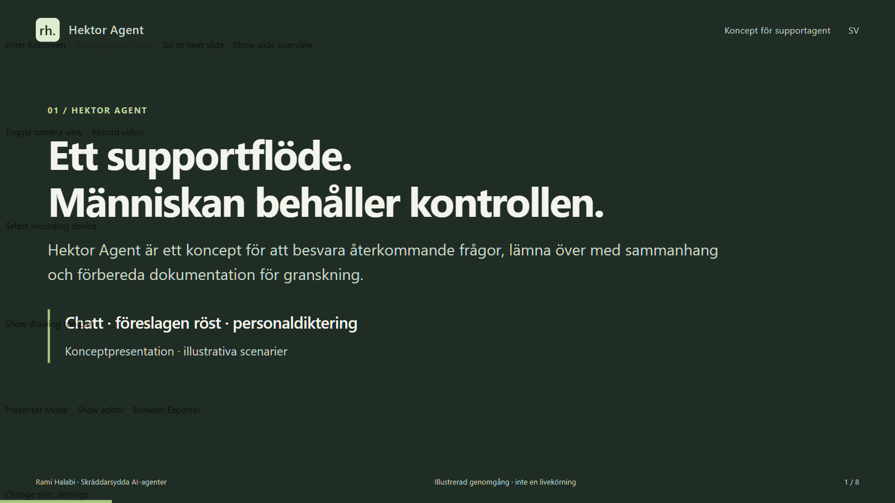
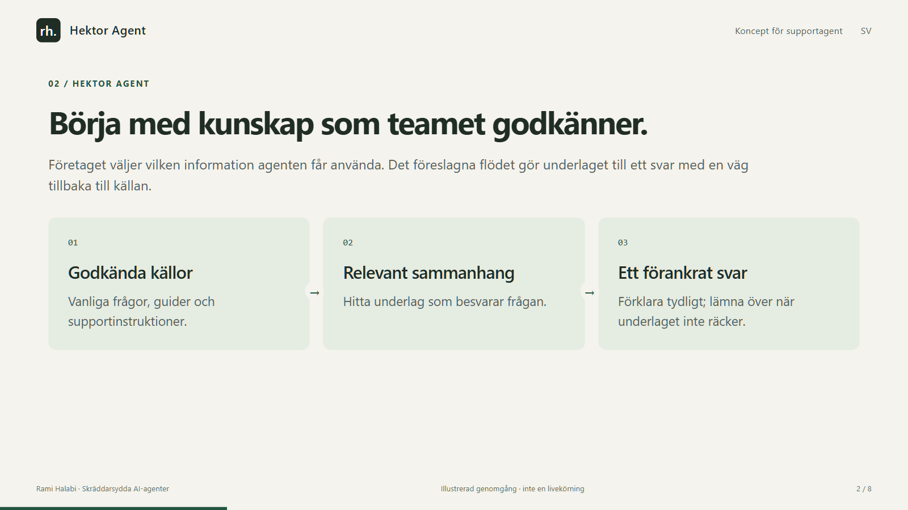
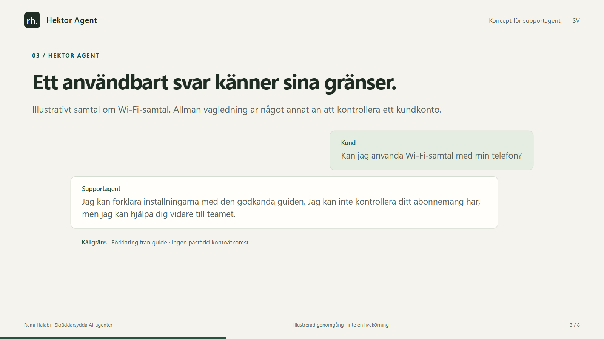
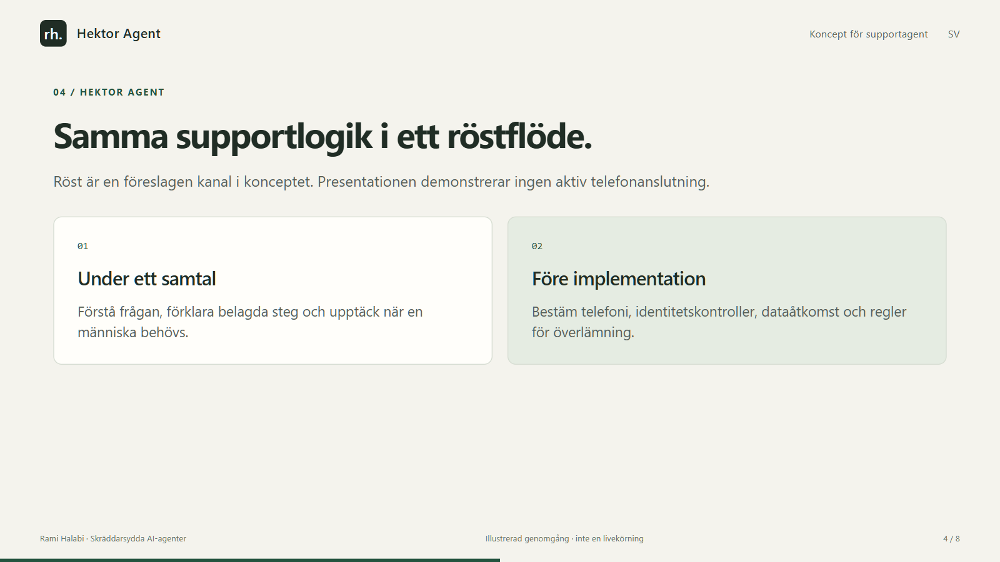
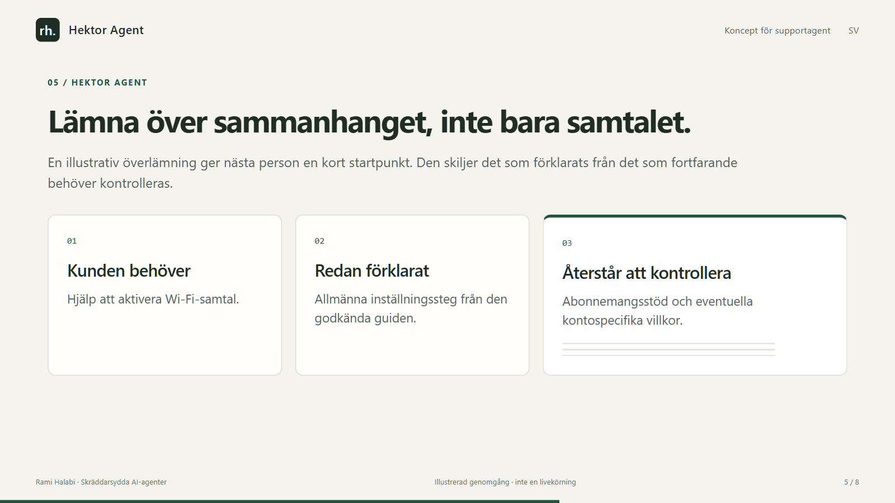
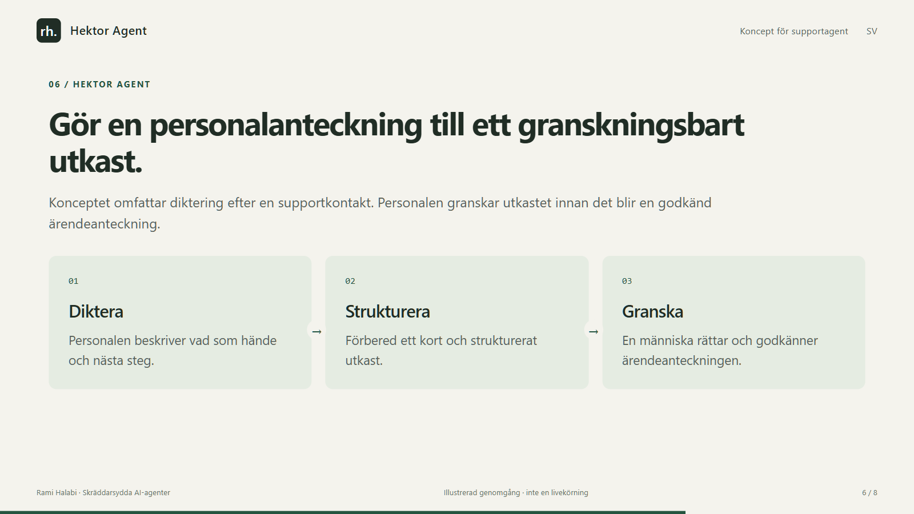
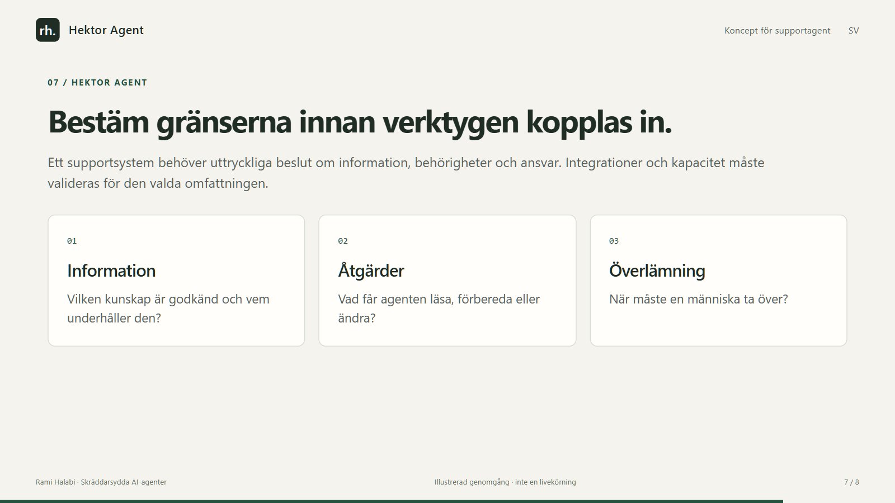
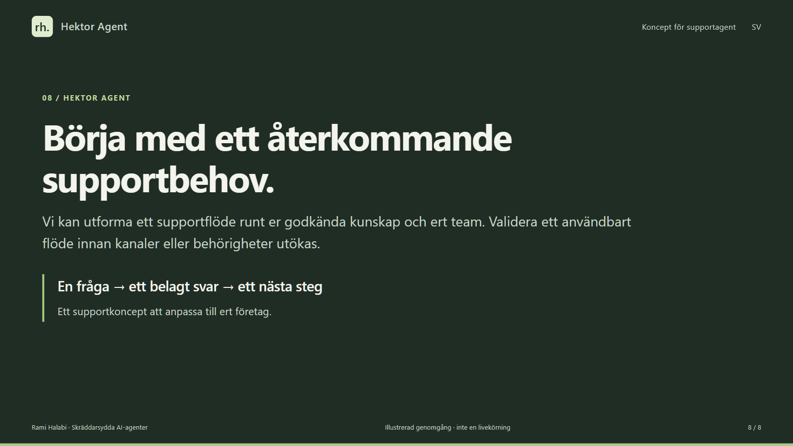

Presentation utan ljud · 2:08
Hektor Agent
Läs hela presentationen i din egen takt. Varje bild och dess text finns nedan.
Hektor är ämnet för detta supportkoncept, inte namnet på denna utvecklingsverksamhet eller en verifierad kundreferens. Telefon- och ärendesystemintegrationer återstår att verifiera. Exemplen är illustrativa.
Bild 1 / 8 · 0:00–0:16
Ett supportflöde. Människan behåller kontrollen.
Hektor Agent är ett koncept för att besvara återkommande frågor, lämna över med sammanhang och förbereda dokumentation för granskning.

- Chatt · föreslagen röst · personaldiktering
- Konceptpresentation · illustrativa scenarier
Bild 2 / 8 · 0:16–0:32
Börja med kunskap som teamet godkänner.
Företaget väljer vilken information agenten får använda. Det föreslagna flödet gör underlaget till ett svar med en väg tillbaka till källan.

- Godkända källor
- Vanliga frågor, guider och supportinstruktioner.
- Relevant sammanhang
- Hitta underlag som besvarar frågan.
- Ett förankrat svar
- Förklara tydligt; lämna över när underlaget inte räcker.
Bild 3 / 8 · 0:32–0:48
Ett användbart svar känner sina gränser.
Illustrativt samtal om Wi-Fi-samtal. Allmän vägledning är något annat än att kontrollera ett kundkonto.

- Kund
- Kan jag använda Wi-Fi-samtal med min telefon?
- Supportagent
- Jag kan förklara inställningarna med den godkända guiden. Jag kan inte kontrollera ditt abonnemang här, men jag kan hjälpa dig vidare till teamet.
- Källgräns
- Förklaring från guide · ingen påstådd kontoåtkomst
Bild 4 / 8 · 0:48–1:04
Samma supportlogik i ett röstflöde.
Röst är en föreslagen kanal i konceptet. Presentationen demonstrerar ingen aktiv telefonanslutning.

- Under ett samtal
- Förstå frågan, förklara belagda steg och upptäck när en människa behövs.
- Före implementation
- Bestäm telefoni, identitetskontroller, dataåtkomst och regler för överlämning.
Bild 5 / 8 · 1:04–1:20
Lämna över sammanhanget, inte bara samtalet.
En illustrativ överlämning ger nästa person en kort startpunkt. Den skiljer det som förklarats från det som fortfarande behöver kontrolleras.

- Kunden behöver
- Hjälp att aktivera Wi-Fi-samtal.
- Redan förklarat
- Allmänna inställningssteg från den godkända guiden.
- Återstår att kontrollera
- Abonnemangsstöd och eventuella kontospecifika villkor.
Bild 6 / 8 · 1:20–1:36
Gör en personalanteckning till ett granskningsbart utkast.
Konceptet omfattar diktering efter en supportkontakt. Personalen granskar utkastet innan det blir en godkänd ärendeanteckning.

- Diktera
- Personalen beskriver vad som hände och nästa steg.
- Strukturera
- Förbered ett kort och strukturerat utkast.
- Granska
- En människa rättar och godkänner ärendeanteckningen.
Bild 7 / 8 · 1:36–1:52
Bestäm gränserna innan verktygen kopplas in.
Ett supportsystem behöver uttryckliga beslut om information, behörigheter och ansvar. Integrationer och kapacitet måste valideras för den valda omfattningen.

- Information
- Vilken kunskap är godkänd och vem underhåller den?
- Åtgärder
- Vad får agenten läsa, förbereda eller ändra?
- Överlämning
- När måste en människa ta över?
Bild 8 / 8 · 1:52–2:08
Börja med ett återkommande supportbehov.
Vi kan utforma ett supportflöde runt er godkända kunskap och ert team. Validera ett användbart flöde innan kanaler eller behörigheter utökas.

- En fråga → ett belagt svar → ett nästa steg
- Ett supportkoncept att anpassa till ert företag.